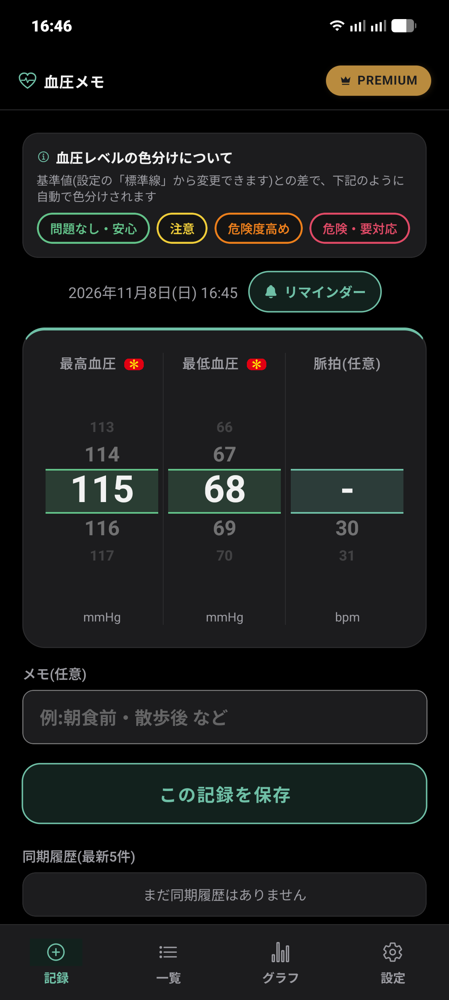
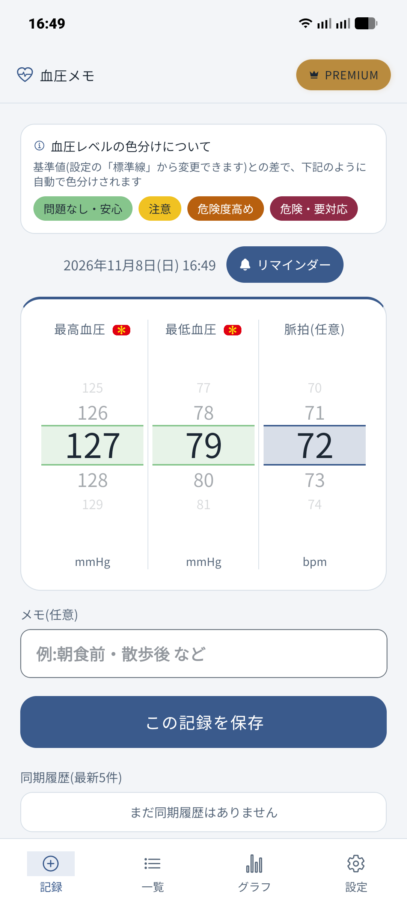
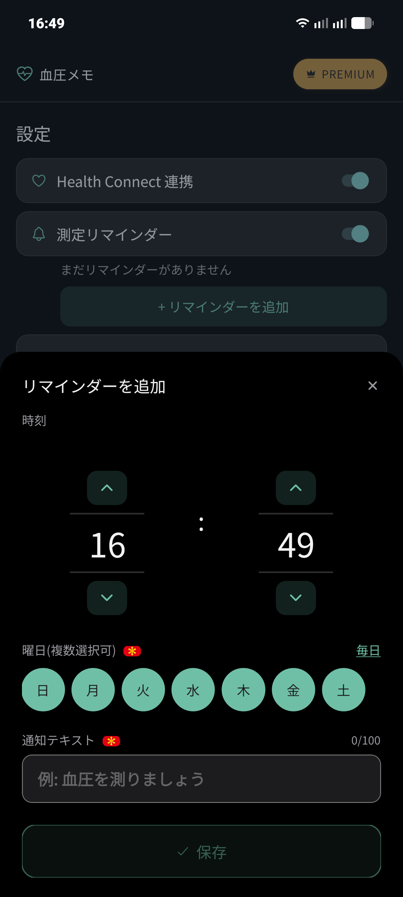
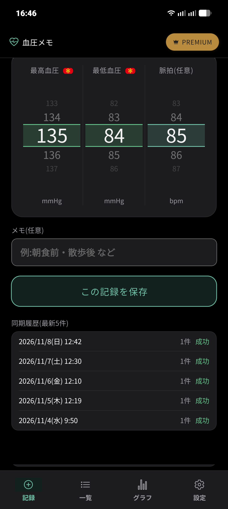

📖 はじめに（この画面でできること）
「記録」タブは、アプリ起動時に最初に表示されるメイン画面です。血圧計で測った数値をダイヤル（ホイール）でスムーズに選び、ワンタップで保存できます。
🛠️ 詳しい操作手順
STEP 1
最高血圧・最低血圧・脈拍を入力する
画面中央のドラムロール式ホイール（ダイヤル）を上下にスワイプして数値を合わせます。
- 最高血圧（必須）: 収縮期血圧（上）を入力します。
- 最低血圧（必須）: 拡張期血圧（下）を入力します。
- 脈拍（任意）: 1分間あたりの脈拍数（bpm）を入力します。測定していない場合は「-」のままで構いません。
- メモ（任意）: 「朝食前」「散歩後」「薬服用後」など、測定時の状況や体調を自由に入力できます。
入力内容を確認したら、画面中央の「この記録を保存」ボタンを押すと、即座にローカルデータベースに記録されます。

ダークモード表示での入力画面

ライトモード表示での入力画面
STEP 2
血圧レベルの色分け判定
入力した血圧は、設定画面で指定した「標準線（基準値）」との差によって、4段階に自動で色分け表示されます。
- 問題なし・安心（緑）: 基準値の範囲内に収まっている良好な状態です。
- 注意（黄）: 基準値をやや上回っている状態です。
- 危険度高め（橙）: 基準値より高めの数値が出ている状態です。
- 危険・要対応（赤）: 著しく高い数値が出ている状態です。
💡 基準値（標準線）の変更
標準線は設定画面からいつでも自由に調整できます（デフォルトは最高115 / 最低68mmHg）。医師の指導値や年代別の平均値に合わせることで、自分に最適な基準で判定できます。
STEP 3
測定リマインダーで通知をセットする
日付表示の右側にある「🔔 リマインダー」ボタンを押すと、通知設定シートが開きます。
- 時刻: 時・分をホイールで合わせます。
- 曜日: 通知を受け取りたい曜日をタップします。「毎日」を押すと全曜日が一括選択されます。
- 通知テキスト: 「血圧を測りましょう」など、通知に表示したいメッセージを設定できます。
「保存」を押すと通知スケジュールが端末に登録され、時間になるとリマインダーが届きます。

時刻・曜日・メッセージを柔軟に指定できるリマインダー設定
STEP 4
Health Connect連携と同期履歴の確認
Android標準の「Health Connect（ヘルスコネクト）」と連携している場合、記録を保存すると自動でHealth Connect側にも血圧データが同期されます。
画面下部の「同期履歴（最新5件）」には、直近の自動同期日時、同期件数、成否ステータスが表示され、正常に連携されているかを一目で確認できます。

同期成功日時と件数を一覧できる同期履歴表示
❓ 記録についてのよくある質問
Q 脈拍を測っていないときはどうすればいいですか？
脈拍欄は「-」の未入力のままで保存できます。最高血圧と最低血圧の2箇所のみ入力してください。
Q 1日に何回も測って記録できますか？
はい、朝・昼・夜など1日に何回でも記録できます。時間帯別のグラフ分析機能でも、朝・昼・夜ごとの血圧を自動で分類して比較できます。